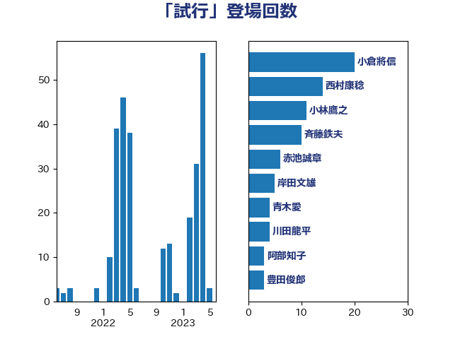

単語「試行」

| 小林鷹之 | 自由民主党 | 11 回 |
| 斉藤鉄夫 | 公明党 | 8 回 |
| 大串博志 | 立憲民主党 | 7 回 |
| 赤池誠章 | 自由民主党 | 6 回 |
| 田村憲久 | 自由民主党 | 5 回 |
| 岸田文雄 | 自由民主党 | 4 回 |
| 川田龍平 | 立憲民主党 | 4 回 |
| 青木愛 | 立憲民主党 | 4 回 |
| 古川禎久 | 自由民主党 | 3 回 |
| 後藤茂之 | 自由民主党 | 3 回 |
| 柴田巧 | 日本維新の会 | 3 回 |
| 橋本聖子 | 無所属 | 3 回 |
| 河野太郎 | 自由民主党 | 3 回 |
| 豊田俊郎 | 自由民主党 | 3 回 |
| 阿部知子 | 立憲民主党 | 3 回 |
| 下野六太 | 公明党 | 2 回 |
| 丸川珠代 | 自由民主党 | 2 回 |
| 今井絵理子 | 自由民主党 | 2 回 |
| 大口善徳 | 公明党 | 2 回 |
| 平木大作 | 公明党 | 2 回 |
| 東徹 | 日本維新の会 | 2 回 |
| 梅村みずほ | 日本維新の会 | 2 回 |
| 田村智子 | 日本共産党 | 2 回 |
| 紙智子 | 日本共産党 | 2 回 |
| 野上浩太郎 | 自由民主党 | 2 回 |
| 野田聖子 | 自由民主党 | 2 回 |
| 馬場成志 | 自由民主党 | 2 回 |
| 高橋千鶴子 | 日本共産党 | 2 回 |
| こやり隆史 | 自由民主党 | 1 回 |
| 三谷英弘 | 自由民主党 | 1 回 |
| 上川陽子 | 自由民主党 | 1 回 |
| 中村裕之 | 自由民主党 | 1 回 |
| 井坂信彦 | 立憲民主党 | 1 回 |
| 伊藤孝恵 | 国民民主党 | 1 回 |
| 伊藤岳 | 日本共産党 | 1 回 |
| 勝部賢志 | 立憲民主党 | 1 回 |
| 古川俊治 | 自由民主党 | 1 回 |
| 嘉田由紀子 | 無所属 | 1 回 |
| 堀内詔子 | 自由民主党 | 1 回 |
| 大島敦 | 立憲民主党 | 1 回 |
| 大西健介 | 立憲民主党 | 1 回 |
| 小池晃 | 日本共産党 | 1 回 |
| 山口壯 | 自由民主党 | 1 回 |
| 岩本剛人 | 自由民主党 | 1 回 |
| 川合孝典 | 国民民主党 | 1 回 |
| 平井卓也 | 自由民主党 | 1 回 |
| 末松信介 | 自由民主党 | 1 回 |
| 本村伸子 | 日本共産党 | 1 回 |
| 杉本和巳 | 日本維新の会 | 1 回 |
| 柚木道義 | 立憲民主党 | 1 回 |
| 梶山弘志 | 自由民主党 | 1 回 |
| 森田俊和 | 立憲民主党 | 1 回 |
| 武村展英 | 自由民主党 | 1 回 |
| 浅野哲 | 国民民主党 | 1 回 |
| 浜地雅一 | 公明党 | 1 回 |
| 玄葉光一郎 | 立憲民主党 | 1 回 |
| 田畑裕明 | 自由民主党 | 1 回 |
| 礒崎哲史 | 国民民主党 | 1 回 |
| 舞立昇治 | 自由民主党 | 1 回 |
| 若松謙維 | 公明党 | 1 回 |
| 茂木敏充 | 自由民主党 | 1 回 |
| 菅義偉 | 自由民主党 | 1 回 |
| 藤井比早之 | 自由民主党 | 1 回 |
| 谷田川元 | 立憲民主党 | 1 回 |
| 赤羽一嘉 | 公明党 | 1 回 |
| 輿水恵一 | 公明党 | 1 回 |
| 近藤和也 | 立憲民主党 | 1 回 |
| 里見隆治 | 公明党 | 1 回 |
| 野田佳彦 | 立憲民主党 | 1 回 |
| 鈴木英敬 | 自由民主党 | 1 回 |
| 高木かおり | 日本維新の会 | 1 回 |
| 鰐淵洋子 | 公明党 | 1 回 |